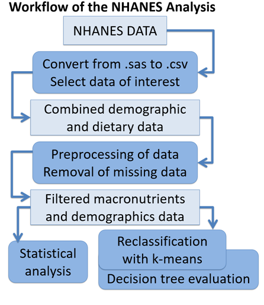
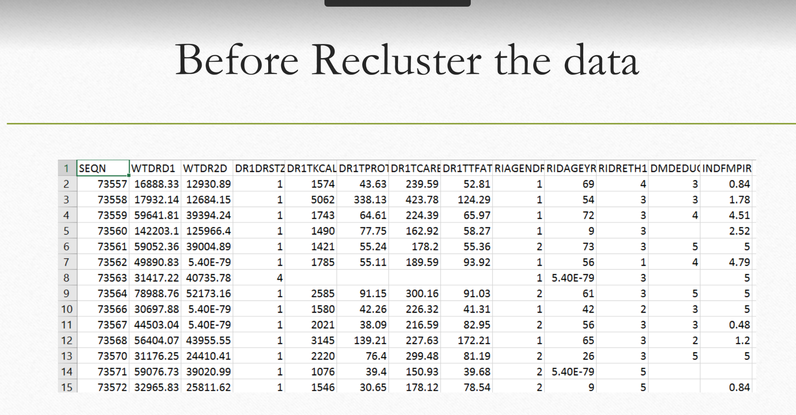
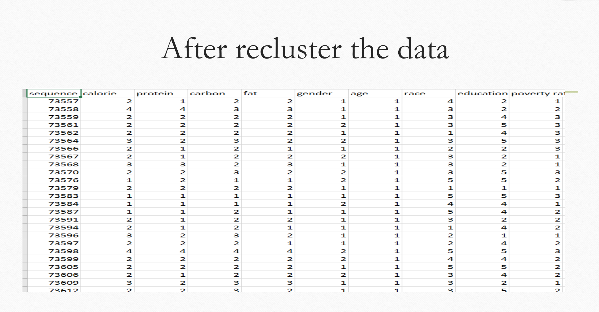
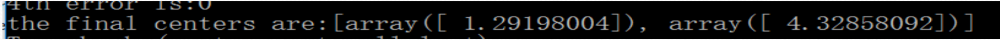
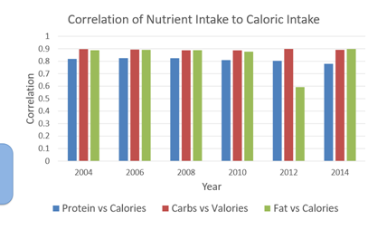
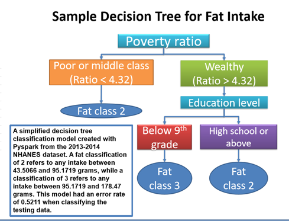

Brief Summary for Software Secure Design Course
For this course our advisor Dr. Novocin broadened our horizons in many technical aspects.We have achieved many knowledge and polarized many technical skills. Our C and C++ skills have been improved significantly. We learned many secure skills for example memory management,linux file manipulation and permissions, gdb debugging,valgrind for memory leaks and so on. Most important harvests in this course are the projects which we have done.
Text Twist Game
For this project I built a website to generate a text-twist game which let users guess the words based on the rack which is given by the system.I used three php files and sqlite database as my backend and one html file as my front-end program.
Tracing Trends in Macronutrient Intake and Energy Balance Across Demographics with Statistics and Machine Learning
For this project my teammate and I used pyspark to preprocess and analyze NHANES data and we made a prototype to predict the nutrient intake based on the demographic data.(90% percent of the code is written by me)
Our workflow:
Before recluster the data:
After recluster the data:
Use k-means clustering to decide the boundaries of continuous data:
Some of our results:
 First Project(Markov Chaining).
For this project I made a website with my teammates to grab the content of tweets and used Markov chaining algorithm to randomly edit the contents of it .For this project we used html,javascript,php,CSS in front end and python ,C++ in back-end.
Second Project(Command-line minesweeper)
We wrote a function which consumes three arguments width height number_of_mines and generates a Minesweeper board internally. The board is a rectangle with a cover over each square. We displayed this board to the user and prompt for a coordinate where they predict that no mine exists (format: x-coord y-coord 0-indexed). If they struck a mine then they lose (let them know). Otherwise uncover the selected square.
Third Project(Secure Geemail)
We built a website which is actually a secure asynchronous message platform supporting customer to login and register. Once they logged in they can read or write email. And all the email text and password which are stored in database are encrypted with hash values in order to protect customer information extreme confidential.(CSS,html,javascript,php,C++,sqlite3)
Other projects
We not only did these projects in this course we also played a role as red team to detect the security loophole in other classmates' project which make us are more confident not only building software but also secure software.
My personal information
Graduate student in University of Delaware major in computer engineering. (Except the content of this course,I am good at artificial intelligence ,distributed computing ,high performance computing) Email: zhuweida@udel.edu